09: Data visualization with ggplot2
What is ggplot2?
ggplot2 is part of the tidyverse , a set of packages created by Hadley Wickham.
ggplot2 implements a grammar of graphics to enable creation of plots from modular building blocks
ggplot2 is designed to work with tidy data (we’ll get into this later today).
Graph components
Plots in ggplot2 consist of 3 main components:
Data : The dataset being summarizedGeometry : The type of plot (scatterplot, boxplot, barplot, histogram, qqplot, smooth density, etc.)Aesthetic mapping : Variables mapped to visual cues, such as x-axis and y-axis values and colors
ggplot(data = <DATA>, mapping = aes(<MAPPINGS>)) + <GEOM_FUNCTION>()
Graph components
geoms
geom_point() for scatter plots, dot plots, etc.geom_histogram() for histogramsgeom_boxplot() for, well, boxplots!geom_line() for trend lines, time series, etc.and many more …
Graph components
There are additional components:
Scale
Labels, Title, Legend
Theme/Style
Our dataset
library (tidyverse)= "https://raw.githubusercontent.com/maxplanck-ie/Rintro/2024.04/qmd/data/rnaseq.csv" = read_csv (rnaseq_file)
# A tibble: 32,428 x 19
gene sample expression organism age sex infection strain time tissue
<chr> <chr> <dbl> <chr> <dbl> <chr> <chr> <chr> <dbl> <chr>
1 Asl GSM254~ 1170 Mus mus~ 8 Fema~ Influenz~ C57BL~ 8 Cereb~
2 Apod GSM254~ 36194 Mus mus~ 8 Fema~ Influenz~ C57BL~ 8 Cereb~
3 Cyp2d22 GSM254~ 4060 Mus mus~ 8 Fema~ Influenz~ C57BL~ 8 Cereb~
4 Klk6 GSM254~ 287 Mus mus~ 8 Fema~ Influenz~ C57BL~ 8 Cereb~
5 Fcrls GSM254~ 85 Mus mus~ 8 Fema~ Influenz~ C57BL~ 8 Cereb~
6 Slc2a4 GSM254~ 782 Mus mus~ 8 Fema~ Influenz~ C57BL~ 8 Cereb~
7 Exd2 GSM254~ 1619 Mus mus~ 8 Fema~ Influenz~ C57BL~ 8 Cereb~
8 Gjc2 GSM254~ 288 Mus mus~ 8 Fema~ Influenz~ C57BL~ 8 Cereb~
9 Plp1 GSM254~ 43217 Mus mus~ 8 Fema~ Influenz~ C57BL~ 8 Cereb~
10 Gnb4 GSM254~ 1071 Mus mus~ 8 Fema~ Influenz~ C57BL~ 8 Cereb~
# i 32,418 more rows
# i 9 more variables: mouse <dbl>, ENTREZID <dbl>, product <chr>,
# ensembl_gene_id <chr>, external_synonym <chr>, chromosome_name <chr>,
# gene_biotype <chr>, phenotype_description <chr>,
# hsapiens_homolog_associated_gene_name <chr>
ggplot2 in action - geom_histogram()
ggplot (data = rna, mapping = aes (x = expression)) + geom_histogram ()
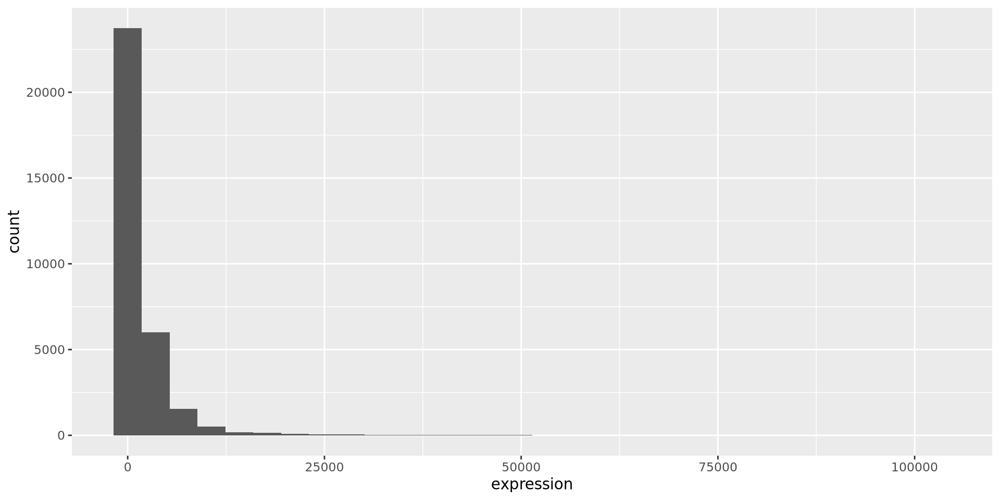
ggplot2 in action - geom_histogram()
Geoms have their own parameters, example bins for geom_histogram()
ggplot (data = rna, mapping = aes (x = expression)) + geom_histogram (bins = 15 )
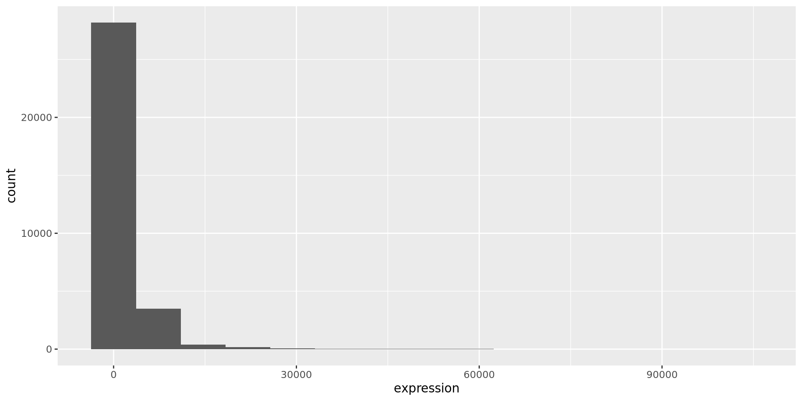
ggplot2 in action - geom_histogram()
We can use a variable to store a template
# Assign plot to a variable = ggplot (data = rna,mapping = aes (x = expression))# Draw the plot + geom_histogram ()
ggplot2 in action - geom_histogram()
We can combine operations to improve the plotting, let’s do a histogram for log2(expression)
# Add a new variable for the log2 values <- rna %>% mutate (expression_log = log2 (expression + 1 ))# Draw the plot ggplot (rna, aes (x = expression_log)) + geom_histogram ()
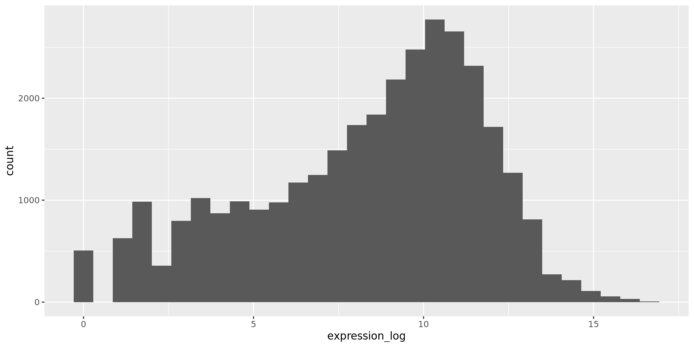We can also use axis scale such as scale_x_log10(), but could not be ideal
ggplot2 in action - geom_points()
For scatter plots we can use geom_points()
Let’s plot the log2 fold changes of expression comparing time 8 versus time 0, and time 4 versus time 0. To this end, we first need to compute the means of the log-transformed expression values by gene and time, then the log fold changes by subtracting the mean log expressions between time 8 and time 0 and between time 4 and time 0. Note that we also include here the gene biotype that we will use later on to represent the genes
ggplot2 in action - geom_points()
Note that are we using “escaped” numbers
= rna %>% select (gene, time,%>% group_by (gene, time, gene_biotype) %>% summarize (mean_exp = mean (expression_log)) %>% pivot_wider (names_from = time,values_from = mean_exp) %>% mutate (time_8_vs_0 = ` 8 ` - ` 0 ` , time_4_vs_0 = ` 4 ` - ` 0 ` )
# A tibble: 1,474 x 7
# Groups: gene [1,474]
gene gene_biotype `0` `4` `8` time_8_vs_0 time_4_vs_0
<chr> <chr> <dbl> <dbl> <dbl> <dbl> <dbl>
1 AI504432 lncRNA 10.0 10.1 9.97 -0.0357 0.0754
2 AW046200 lncRNA 7.28 7.23 6.35 -0.930 -0.0497
3 AW551984 protein_coding 7.86 7.26 8.19 0.334 -0.596
4 Aamp protein_coding 12.2 12.2 12.2 0.0391 0.0754
5 Abca12 protein_coding 2.51 2.34 2.33 -0.180 -0.173
6 Abcc8 protein_coding 11.3 11.3 11.2 -0.164 0.0234
7 Abhd14a protein_coding 9.20 9.08 8.75 -0.445 -0.115
8 Abi2 protein_coding 12.2 12.2 12.3 0.0158 -0.00129
9 Abi3bp protein_coding 10.2 10.0 9.57 -0.622 -0.154
10 Abl2 protein_coding 11.1 11.0 11.1 -0.0271 -0.0793
# i 1,464 more rows
ggplot2 in action - geom_points()
Now, we can plot
ggplot (data = rna_fc, mapping = aes (x = time_4_vs_0, y = time_8_vs_0)) + geom_point ()
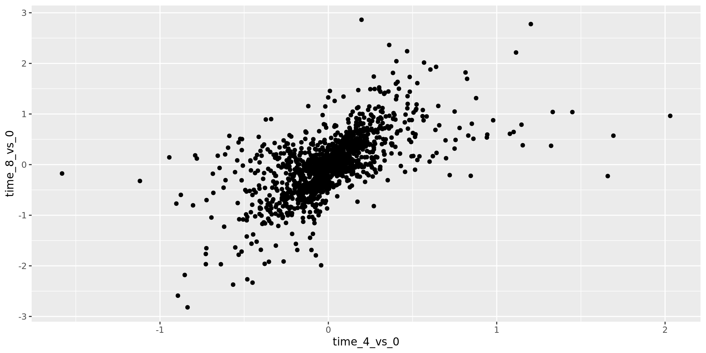
ggplot2 in action - geom_points()
Too many points …, let’s reduce overplotting with alpha
ggplot (data = rna_fc, mapping = aes (x = time_4_vs_0, y = time_8_vs_0)) + geom_point (alpha = 0.3 )
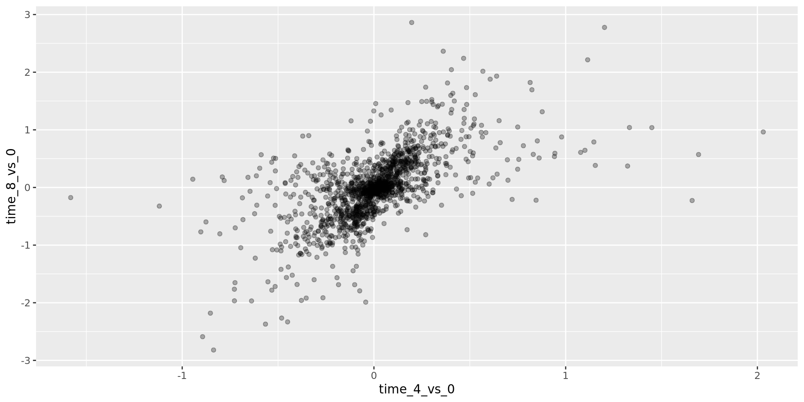
ggplot2 in action - geom_points()
I would like more colors …
ggplot (data = rna_fc, mapping = aes (x = time_4_vs_0, y = time_8_vs_0)) + geom_point (alpha = 0.3 , color = "blue" )
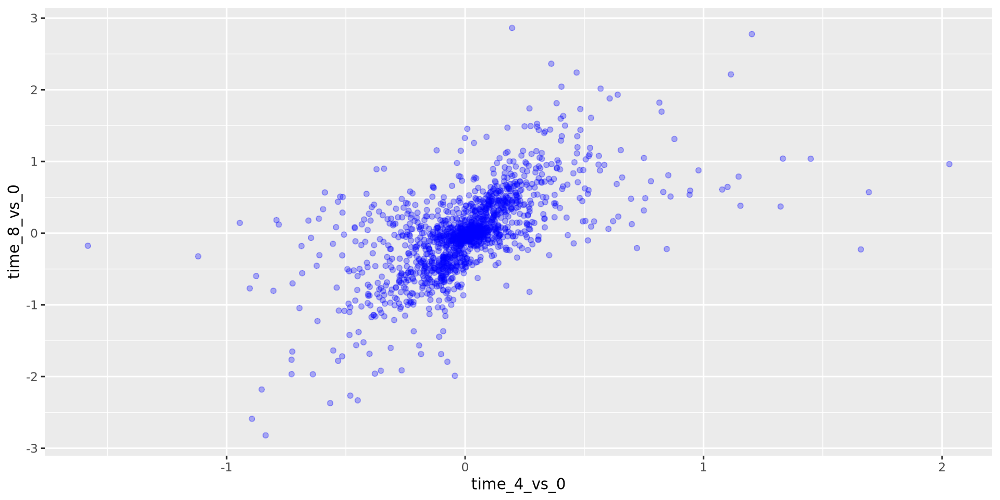
ggplot2 in action - geom_points()
Can we color by a categorie (gene_biotype)? Sure …
ggplot (data = rna_fc, mapping = aes (x = time_4_vs_0, y = time_8_vs_0)) + geom_point (alpha = 0.3 , aes (color = gene_biotype))
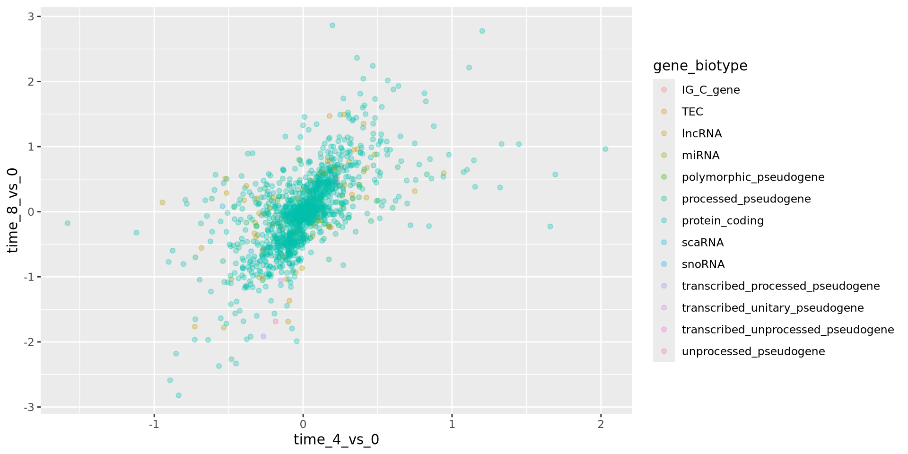
ggplot2 in action - geom_points()
Color by categorie can be defined before the geom call
ggplot (data = rna_fc, mapping = aes (x = time_4_vs_0, y = time_8_vs_0,color = gene_biotype)) + geom_point (alpha = 0.3 )
ggplot2 in action - geom_points()
Adding additional elements, such as a diagonal with geom_abline()
ggplot (data = rna_fc, mapping = aes (x = time_4_vs_0, y = time_8_vs_0,color = gene_biotype)) + geom_point (alpha = 0.3 ) + geom_abline (intercept = 0 )
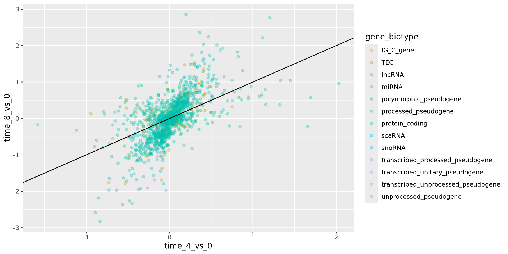
ggplot2 in action - geom_boxplot()
Boxplots are good to visualize distributions, let’s see gene expression over samples
ggplot (data = rna,mapping = aes (y = expression_log, x = sample)) + geom_boxplot ()
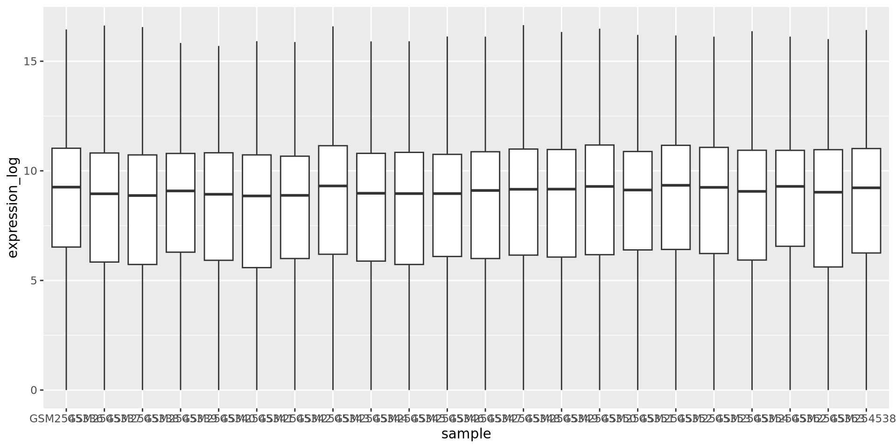
ggplot2 in action - geom_boxplot()
We can add the points over the boxplot with geom_jitter()
ggplot (data = rna,mapping = aes (y = expression_log, x = sample)) + geom_jitter (alpha = 0.2 , color = "tomato" ) + geom_boxplot (alpha = 0 )
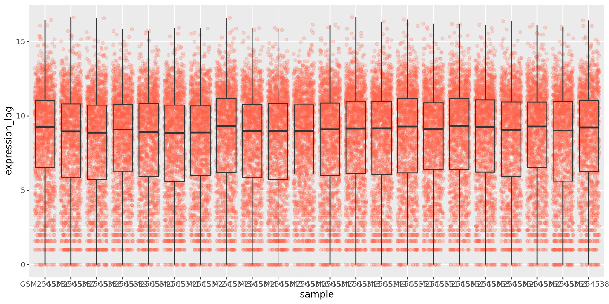
ggplot2 in action - geom_boxplot()
But I can’t read the labels!!
theme can be used to modify the axis labels
ggplot (data = rna,mapping = aes (y = expression_log, x = sample)) + geom_jitter (alpha = 0.2 , color = "tomato" ) + geom_boxplot (alpha = 0 ) + theme (axis.text.x = element_text (angle = 90 , hjust = 0.5 , vjust = 0.5 ))
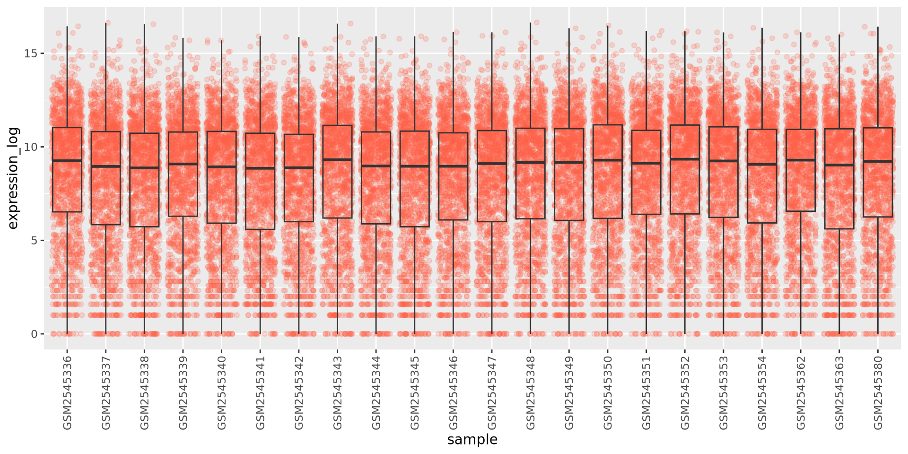
ggplot2 in action - geom_boxplot()
Can we color each sample per time point? Sure …
# time as integer ggplot (data = rna,mapping = aes (y = expression_log,x = sample)) + geom_jitter (alpha = 0.2 , aes (color = time)) + geom_boxplot (alpha = 0 ) + theme (axis.text.x = element_text (angle = 90 , hjust = 0.5 , vjust = 0.5 ))
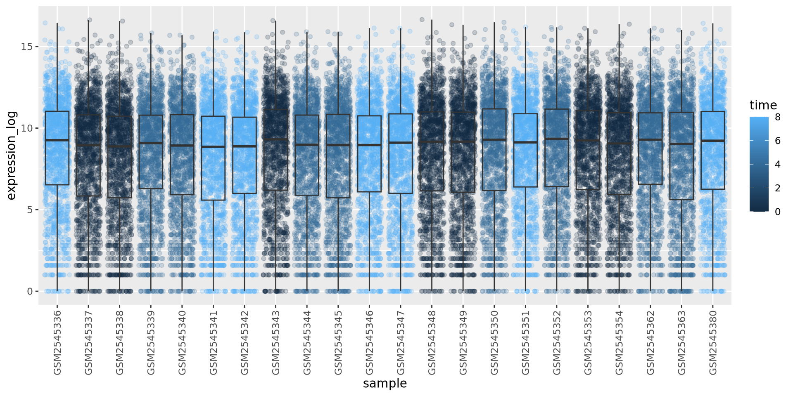Is this what we want?
ggplot2 in action - geom_boxplot()
Can we color each sample per time point? Sure …
# time as factor ggplot (data = rna,mapping = aes (y = expression_log,x = sample)) + geom_jitter (alpha = 0.2 , aes (color = as.factor (time))) + geom_boxplot (alpha = 0 ) + theme (axis.text.x = element_text (angle = 90 , hjust = 0.5 , vjust = 0.5 ))
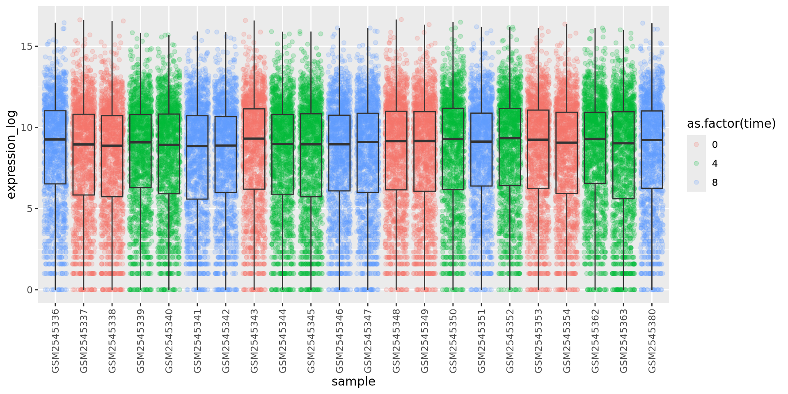Better …
ggplot2 in action - geom_violin()
Same information can be plot in a Violin plot
ggplot (data = rna,mapping = aes (y = expression_log, x = sample)) + geom_violin (aes (fill = as.factor (time))) + theme (axis.text.x = element_text (angle = 90 , hjust = 0.5 , vjust = 0.5 ))
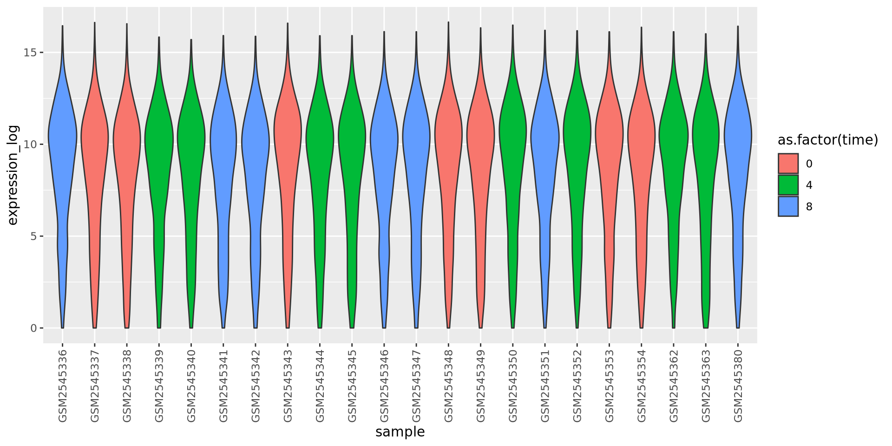
ggplot2 in action - geom_violin()
But now I want to see colors by sex … OK
ggplot (data = rna,mapping = aes (y = expression_log, x = sample)) + geom_violin (aes (fill = sex)) + theme (axis.text.x = element_text (angle = 90 , hjust = 0.5 , vjust = 0.5 ))
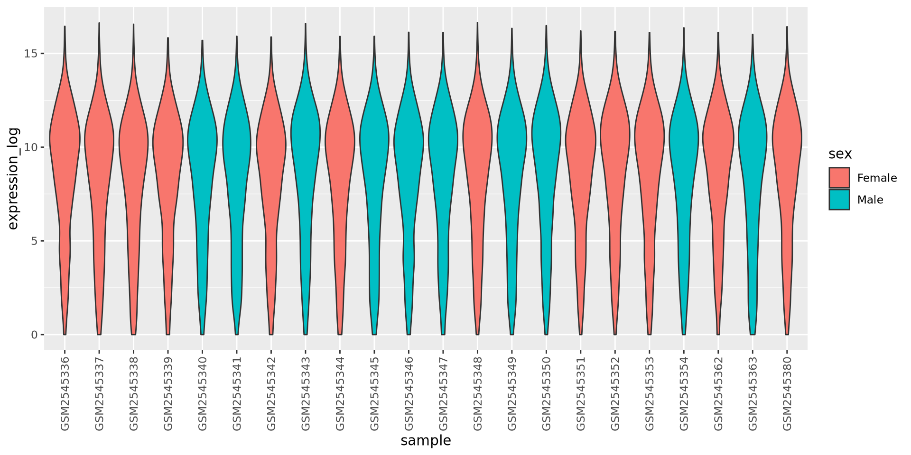
ggplot2 in action - geom_line()
geom_line() can be used to generate “line” plots …
Let’s generate a dataset of the mean expression per duration of the infection for the 10 genes having the highest log fold changes comparing time 8 versus time 0.
= rna_fc %>% arrange (desc (time_8_vs_0))= rna_fc$ gene[1 : 10 ]<- rna %>% filter (gene %in% genes_selected)<- sub_rna %>% group_by (gene,time) %>% summarize (mean_exp = mean (expression_log))
# A tibble: 30 x 3
# Groups: gene [10]
gene time mean_exp
<chr> <dbl> <dbl>
1 Acr 0 5.07
2 Acr 4 5.54
3 Acr 8 7.31
4 Aipl1 0 3.70
5 Aipl1 4 3.89
6 Aipl1 8 6.56
7 Bst1 0 3.20
8 Bst1 4 3.77
9 Bst1 8 5.22
10 Chil3 0 4.00
# i 20 more rows
ggplot2 in action - geom_line()
Now, we can plot the patterns
ggplot (data = mean_exp_by_time,mapping = aes (x = time, y = mean_exp, group = gene)) + geom_line ()
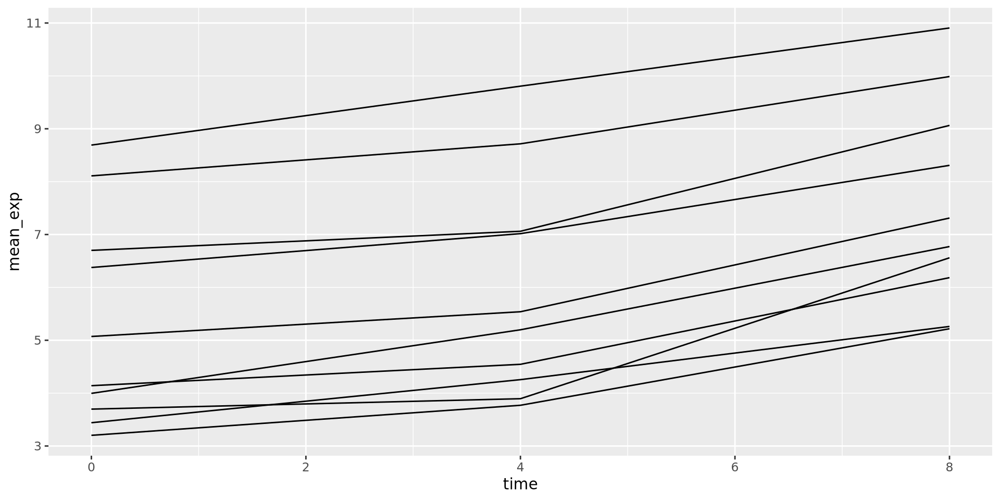Why do we need group?
ggplot2 in action - geom_line()
Adding colors and gene labels
ggplot (data = mean_exp_by_time,mapping = aes (x = time, y = mean_exp, color = gene)) + geom_line ()
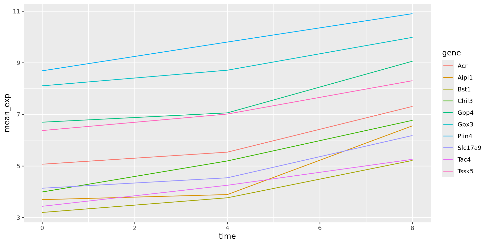No group because …
ggplot2 in action - facet_wrap()
We can plot multiple elements in a single plot separately with facet_wrap()
ggplot (data = mean_exp_by_time,mapping = aes (x = time, y = mean_exp)) + geom_line () + facet_wrap (~ gene)
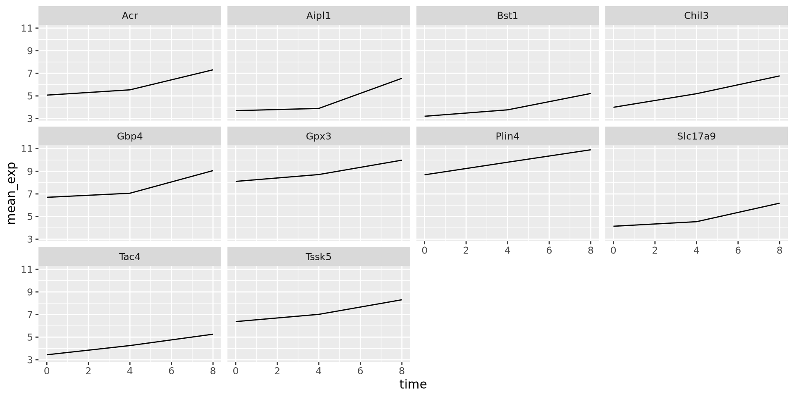
ggplot2 in action - facet_wrap()
By default, all scales are the same, to avoid this:
ggplot (data = mean_exp_by_time,mapping = aes (x = time, y = mean_exp)) + geom_line () + facet_wrap (~ gene, scales = "free_y" )
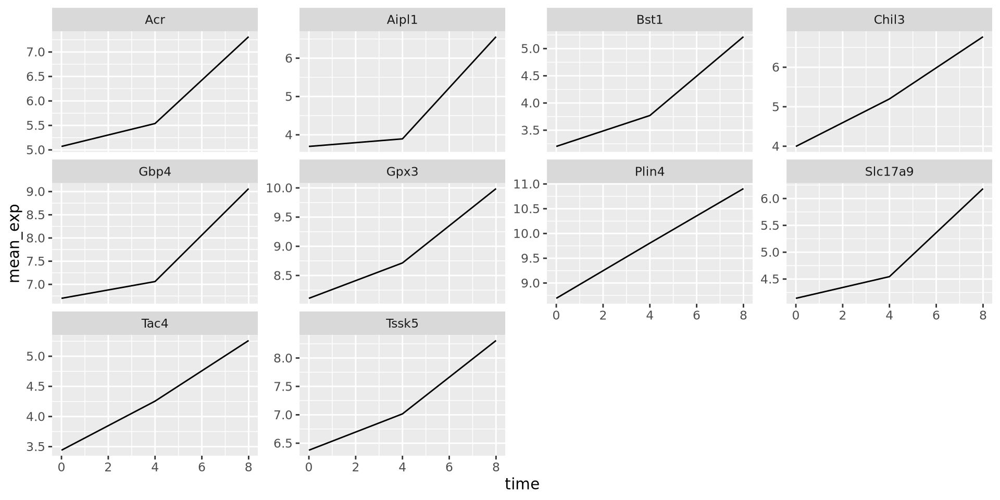
ggplot2 in action - facet_wrap()
To plot the same per sex, we need to generate a new dataset
<- sub_rna %>% group_by (gene, time, sex) %>% summarize (mean_exp = mean (expression_log))
# A tibble: 60 x 4
# Groups: gene, time [30]
gene time sex mean_exp
<chr> <dbl> <chr> <dbl>
1 Acr 0 Female 5.13
2 Acr 0 Male 5.00
3 Acr 4 Female 5.93
4 Acr 4 Male 5.15
5 Acr 8 Female 7.27
6 Acr 8 Male 7.36
7 Aipl1 0 Female 3.67
8 Aipl1 0 Male 3.73
9 Aipl1 4 Female 4.07
10 Aipl1 4 Male 3.72
# i 50 more rows
ggplot2 in action - facet_wrap()
Now we plot …
ggplot (data = mean_exp_by_time_sex,mapping = aes (x = time, y = mean_exp, color = sex)) + geom_line () + facet_wrap (~ gene, scales = "free_y" )
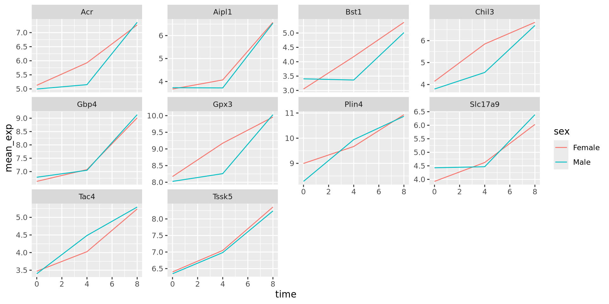
ggplot2 in action - theme_bw()
For printing we could want to save ink, ggplot2 supports themes such as theme_bw()
ggplot (data = mean_exp_by_time_sex,mapping = aes (x = time, y = mean_exp, color = sex)) + geom_line () + facet_wrap (~ gene, scales = "free_y" ) + theme_bw () + theme (panel.grid = element_blank ())
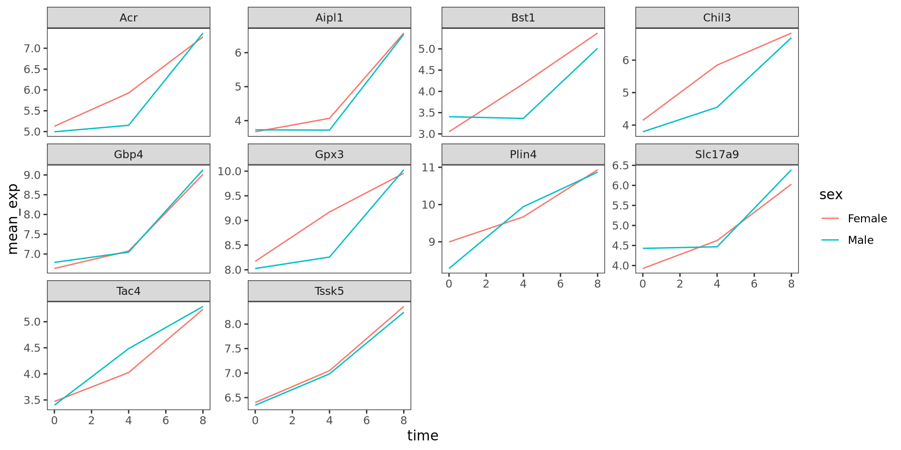
ggplot2 in action - customization
Many elements can be configured individually, helping to obtain the exact plot you want
ggplot (data = mean_exp_by_time_sex,mapping = aes (x = time, y = mean_exp, color = sex)) + geom_line () + facet_wrap (~ gene, scales = "free_y" ) + theme_bw () + theme (panel.grid = element_blank ()) + labs (title = "Mean gene expression by duration of the infection" ,x = "Duration of the infection (in days)" ,y = "Mean gene expression" ) + theme (text = element_text (size = 16 ),axis.text.x = element_text (colour = "royalblue4" , size = 12 ),axis.text.y = element_text (colour = "royalblue4" , size = 12 ),panel.grid = element_line (colour= "lightsteelblue1" ),legend.position = "top" )
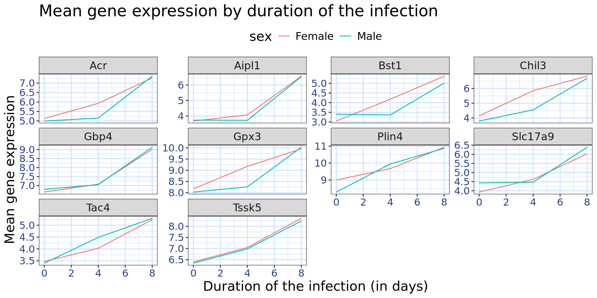
ggplot2 in action - ggsave()
At the end, we would like to save our gorgeous plot, we can use ggsave().
= ggplot (data = mean_exp_by_time_sex,mapping = aes (x = time, y = mean_exp, color = sex)) + geom_line () + facet_wrap (~ gene, scales = "free_y" ) + labs (title = "Mean gene expression by duration of the infection" ,x = "Duration of the infection (in days)" ,y = "Mean gene expression" ) + guides (color= guide_legend (title= "Gender" )) + theme_bw () + theme (axis.text.x = element_text (colour = "royalblue4" , size = 12 ),axis.text.y = element_text (colour = "royalblue4" , size = 12 ),text = element_text (size = 16 ),panel.grid = element_line (colour= "lightsteelblue1" ),legend.position = "top" )ggsave ("mean_exp_by_time_sex.png" , my_plot, width = 15 ,height = 10 )
Tip of the iceberg
See this handy cheatsheet for lots more!
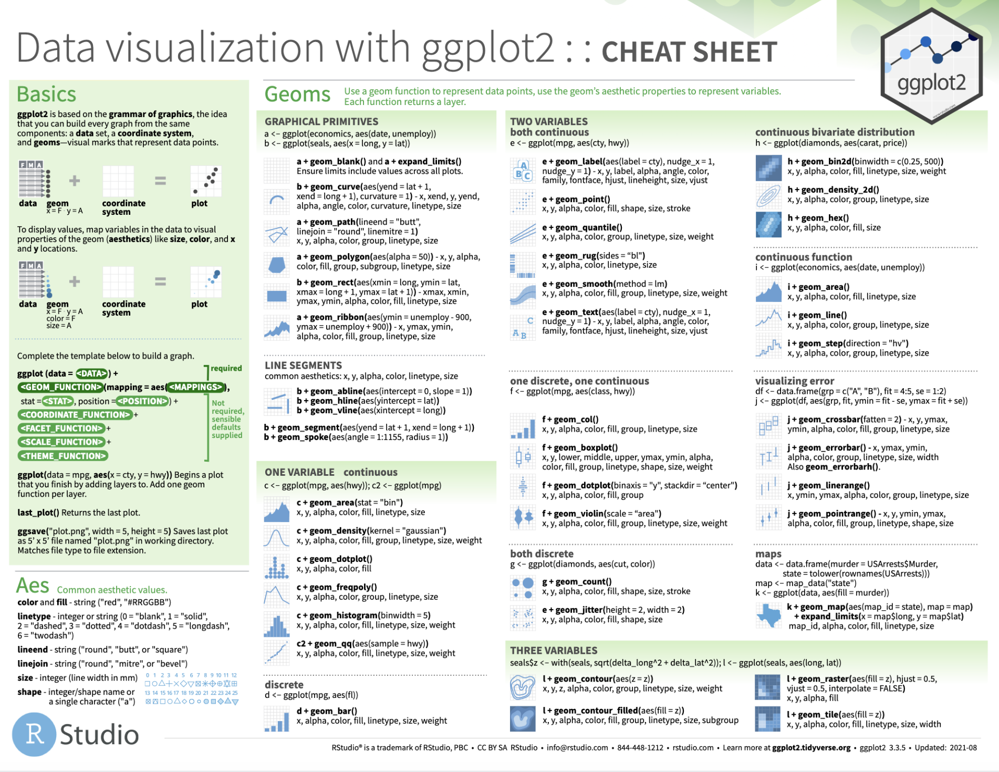
Any questions?
Next, we will learn a bit about tidying data.